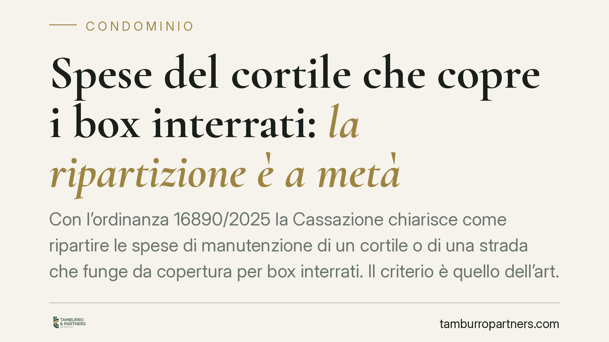

Spese del cortile che copre i box interrati: la ripartizione è a metà
Con l'ordinanza 16890/2025 la Cassazione chiarisce come ripartire le spese di manutenzione di un cortile o di una strada che funge da copertura per box interrati. Il criterio è quello dell'art. 1125 c.c.: divisione a metà tra proprietari superiori e inferiori. Resta escluso il criterio del lastrico solare (art. 1126 c.c.). Una distinzione che incide direttamente sui conteggi millesimali.

Il caso deciso dalla Cassazione
Un cortile, o una strada di manovra, serve contemporaneamente a due funzioni: consente il transito e la sosta in superficie e, al tempo stesso, costituisce la copertura dei box auto collocati al piano interrato. Quando quella struttura deve essere riparata o manutenuta, chi paga e in che misura?
La Cassazione Civile, Sezione II, con l'ordinanza n. 16890 del 24 giugno 2025, ha risposto applicando l'art. 1125 del Codice civile: le spese si dividono al 50% tra chi utilizza la superficie e chi è coperto dalla struttura. Viene invece esclusa l'applicazione dell'art. 1126 c.c., che prevede il diverso criterio del lastrico solare (un terzo a carico di chi ne ha l'uso esclusivo, due terzi a carico dei proprietari sottostanti).
Inquadramento normativo
L'art. 1125 c.c. disciplina le spese relative ai solai e, più in generale, alle strutture orizzontali che separano due piani sovrapposti. La norma stabilisce che le spese di manutenzione e ricostruzione dei soffitti, delle volte e dei solai sono sostenute in parti eguali dai proprietari dei due piani, l'uno all'altro sovrastanti. Il pavimento resta a carico del proprietario del piano superiore, l'intonaco e la tinteggiatura del soffitto a carico del piano inferiore.
L'art. 1126 c.c. riguarda invece i lastrici solari di uso esclusivo: qui la ripartizione è un terzo/due terzi, perché la giurisprudenza riconosce che chi ha l'uso esclusivo del lastrico ne trae un vantaggio particolare, mentre la funzione di copertura va a beneficio prevalente dei piani sottostanti.
Il punto decisivo è la qualificazione del bene. Il cortile che copre i box non è un lastrico solare di uso esclusivo: è una superficie comune che svolge, allo stesso tempo, funzione di passaggio e funzione di copertura. Per questa sua natura "a doppia funzione", la Corte lo assimila al solaio dell'art. 1125 c.c. e non al lastrico dell'art. 1126 c.c.
Resta fermo che, laddove la struttura serva una pluralità di unità in modo diverso, i criteri generali dell'art. 1123 c.c. (ripartizione in base all'uso e alla proprietà) possono integrare il quadro.
Implicazioni pratiche
La differenza tra i due criteri non è teorica. Con l'art. 1126 c.c. il proprietario superiore pagherebbe un terzo e i box sottostanti due terzi. Con l'art. 1125 c.c. il peso si distribuisce a metà: chi possiede un box interrato sostiene una quota inferiore rispetto a quella che gli deriverebbe dal criterio del lastrico solare.
Questo ha effetti concreti sui conteggi assembleari, specie nei supercondomini e nei complessi residenziali dotati di autorimesse interrate. Delibere di spesa impostate sul criterio del lastrico solare possono risultare viziate e, quindi, impugnabili dal condomino che si ritenga leso.
Il soggetto più esposto è il proprietario del box interrato, ma anche l'amministratore ha interesse a impostare correttamente i riparti, per evitare contenziosi e responsabilità per ripartizioni errate.
Cosa fare in concreto
- Verificate la natura del bene. Accertate se la superficie di copertura dei box sia un cortile/strada comune o un lastrico solare di uso esclusivo: la qualificazione determina il criterio applicabile.
- Controllate il regolamento condominiale. Un regolamento di natura contrattuale può prevedere criteri di riparto diversi da quelli di legge e prevale su di essi.
- Rileggete le delibere di spesa recenti. Se una ripartizione è stata impostata sull'art. 1126 c.c. per un cortile che copre i box, valutate la tempestiva impugnazione nei termini di legge.
- Amministratori: aggiornate i criteri di riparto. Adeguate i conteggi all'orientamento espresso dalla Cassazione prima dell'approvazione del prossimo bilancio.
- Conservate la documentazione tecnica. Planimetrie e titoli di proprietà sono decisivi per dimostrare la funzione del bene in caso di contestazione.
Disclaimer
Contributo informativo a cura di Tamburro & Partners - Avv. Giuseppe Tamburro. Non costituisce parere legale.
Ogni condominio ha una storia a sé.
Se gestisci un'amministrazione e vuoi un confronto su una specifica questione condominiale, scrivi allo studio. Ti rispondiamo entro un giorno lavorativo.